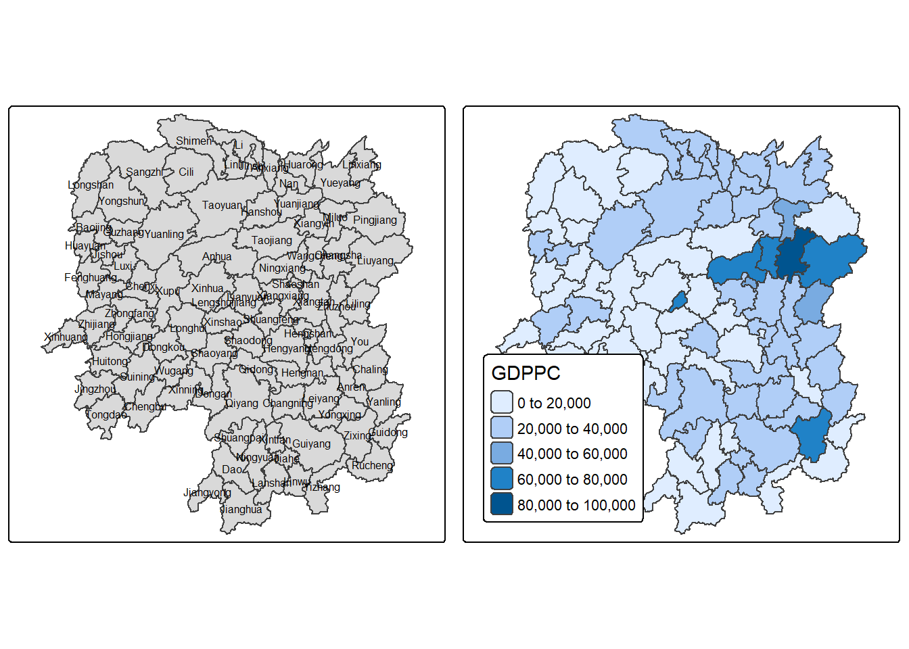
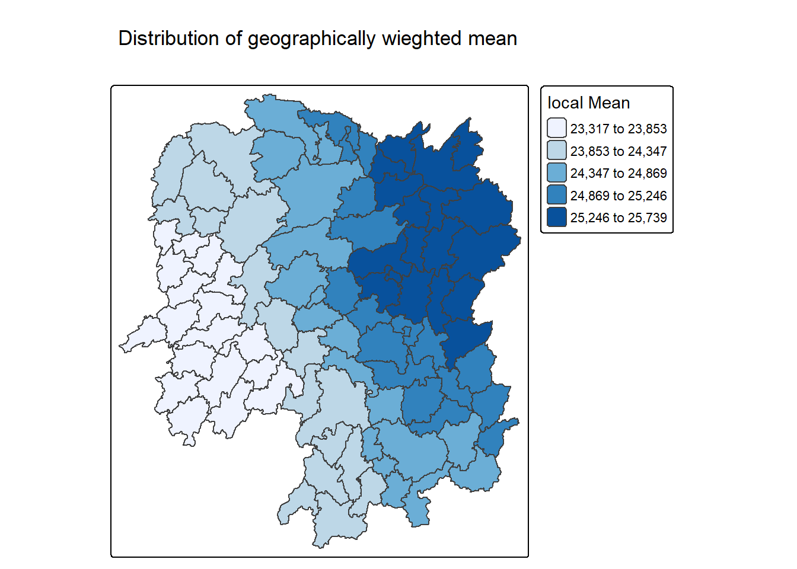
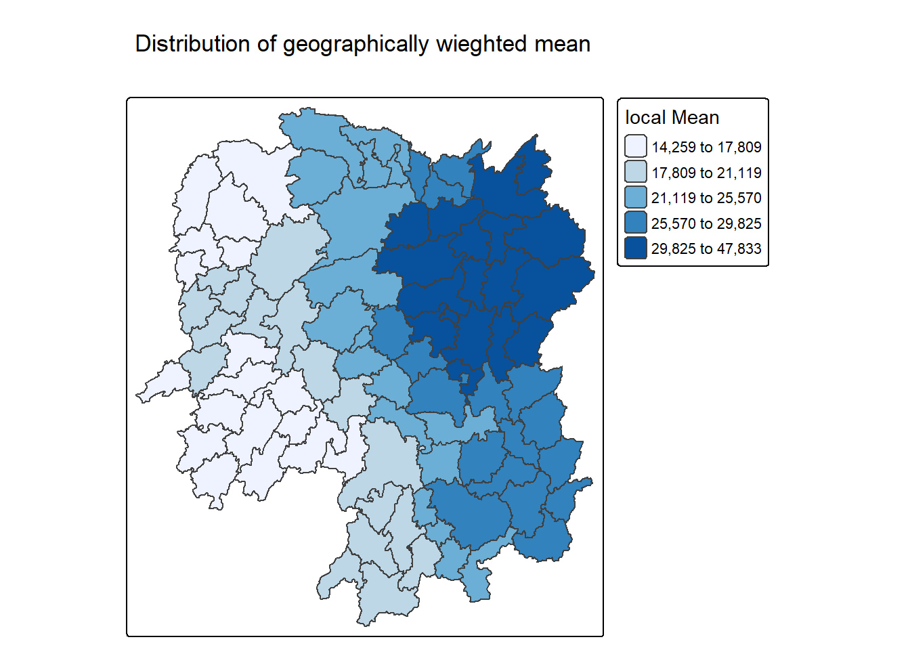
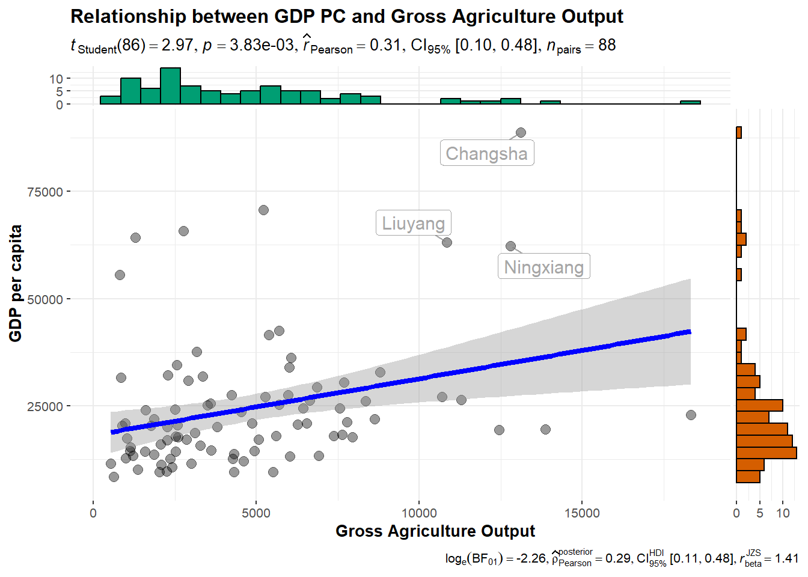
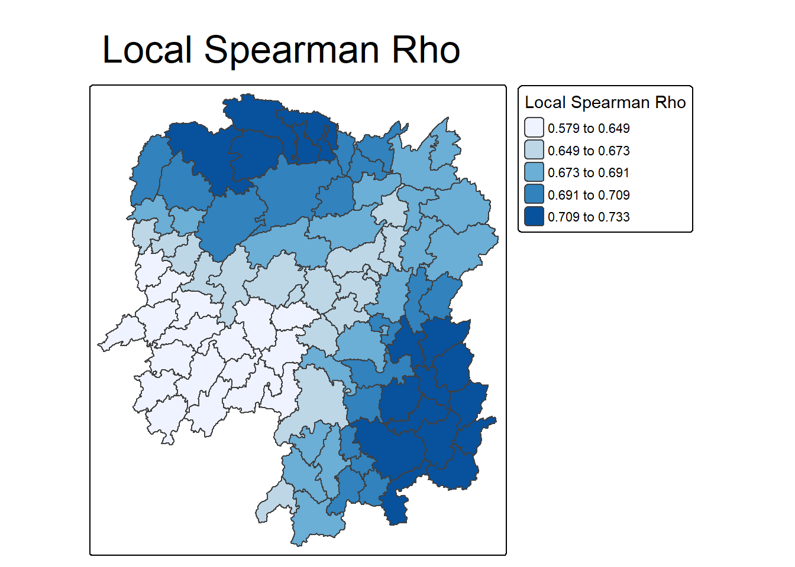

pacman::p_load(sf, spdep, tmap, tidyverse, knitr, GWmodel, ggstatsplot)In-class 4 | Spatial Weights and Applications
In this hands-on exercise, we will learn how to compute spatial weights using R.
2 Overview
2.1 Learning Outcomes
In this hands-on exercise, you will learn how to compute spatial weights using R using the following techniques:
- Import geospatial data using appropriate function(s) of sf package,
- Import csv file using appropriate function of readr package,
- Perform relational join using appropriate join function of dplyr package,
- Compute spatial weights using appropriate functions of spdep package, and
- Calculate spatially lagged variables using appropriate functions of spdep package.
2.2 The Data
| Dataset | Description | Format |
|---|---|---|
| Hunan county boundary layer | Hunan county boundary layer | CSV |
| Hunan_2012 | Containing selected Hunan’s local development indicators in 2012 | Hunan_2012.csv |
2.3 Install R packages
Before we get started, we need to ensure that spdep, sf, tmap and tidyverse packages of R are currently installed in your R.
3 Getting the Data Into R Environment
In this section, you will learn how to bring a geospatial data and its associated attribute table into R environment. The geospatial data is in ESRI shapefile format and the attribute table is in csv format.
3.1 Import shapefile into r environment
The code chunk below uses st_read() of sf package to import Hunan shapefile into R. The imported shapefile will be simple features Object of sf.
hunan <- st_read(dsn = "data/geospatial",
layer = "Hunan")Reading layer `Hunan' from data source
`D:\ngoclinhnguyen-2806\ISSS626-GAA\In-class_Ex\In-class_Ex04\data\geospatial'
using driver `ESRI Shapefile'
Simple feature collection with 88 features and 7 fields
Geometry type: POLYGON
Dimension: XY
Bounding box: xmin: 108.7831 ymin: 24.6342 xmax: 114.2544 ymax: 30.12812
Geodetic CRS: WGS 843.2 Import csv file into r environment
Next, we will import Hunan_2012.csv into R by using read_csv() of readr package. The output is R dataframe class.
hunan2012 <- read_csv("data/aspatial/Hunan_2012.csv")4 Data Wrangling
4.1 Performing relational join
The code chunk below will be used to update the attribute table of hunan’s SpatialPolygonsDataFrame with the attribute fields of hunan2012 dataframe. This is performed by using left_join() of dplyr package.
# Join by County, but no need to explicitly mention because both datasets have this column
hunan_sf <- left_join(hunan, hunan2012) %>%
select(1:3, 7, 15, 16, 31, 32)4.2 Mapping GDPPC
Now, we are going to prepare a basemap and a choropleth map showing the distribution of GDPPC 2012 by using qtm() of tmap package.
basemap <- tm_shape(hunan_sf) +
tm_polygons() +
tm_text("NAME_3", size=0.5)
gdppc <- qtm(hunan_sf, "GDPPC") + tm_layout(legend.position = c("left", "bottom"))
tmap_arrange(basemap, gdppc, asp=1, ncol=2)
4.3 Converting to Spatial Polygon Data Frame
hunan_sp <- hunan_sf %>% as_Spatial()5 Geographically Weighted Summary Statistics (GWSS) with adaptive bandwidth
5.1 Determine adaptive bandwidth
5.1.1 Cross Validation (CV)
bw_CV <- bw.gwr(GDPPC ~ 1,
data = hunan_sp,
approach = "CV",
adaptive = FALSE,
kernel = "bisquare",
longlat = T)Fixed bandwidth: 357.4897 CV score: 16265191728
Fixed bandwidth: 220.985 CV score: 14954930931
Fixed bandwidth: 136.6204 CV score: 14134185837
Fixed bandwidth: 84.48025 CV score: 13693362460
Fixed bandwidth: 52.25585 CV score: Inf
Fixed bandwidth: 104.396 CV score: 13891052305
Fixed bandwidth: 72.17162 CV score: 13577893677
Fixed bandwidth: 64.56447 CV score: 14681160609
Fixed bandwidth: 76.8731 CV score: 13444716890
Fixed bandwidth: 79.77877 CV score: 13503296834
Fixed bandwidth: 75.07729 CV score: 13452450771
Fixed bandwidth: 77.98296 CV score: 13457916138
Fixed bandwidth: 76.18716 CV score: 13442911302
Fixed bandwidth: 75.76323 CV score: 13444600639
Fixed bandwidth: 76.44916 CV score: 13442994078
Fixed bandwidth: 76.02523 CV score: 13443285248
Fixed bandwidth: 76.28724 CV score: 13442844774
Fixed bandwidth: 76.34909 CV score: 13442864995
Fixed bandwidth: 76.24901 CV score: 13442855596
Fixed bandwidth: 76.31086 CV score: 13442847019
Fixed bandwidth: 76.27264 CV score: 13442846793
Fixed bandwidth: 76.29626 CV score: 13442844829
Fixed bandwidth: 76.28166 CV score: 13442845238
Fixed bandwidth: 76.29068 CV score: 13442844678
Fixed bandwidth: 76.29281 CV score: 13442844691
Fixed bandwidth: 76.28937 CV score: 13442844698
Fixed bandwidth: 76.2915 CV score: 13442844676
Fixed bandwidth: 76.292 CV score: 13442844679
Fixed bandwidth: 76.29119 CV score: 13442844676
Fixed bandwidth: 76.29099 CV score: 13442844676
Fixed bandwidth: 76.29131 CV score: 13442844676
Fixed bandwidth: 76.29138 CV score: 13442844676
Fixed bandwidth: 76.29126 CV score: 13442844676
Fixed bandwidth: 76.29123 CV score: 13442844676 5.1.2 AIC
bw_AIC <- bw.gwr(GDPPC ~ 1,
data = hunan_sp,
approach = "AIC",
adaptive = FALSE,
kernel = "bisquare",
longlat = T)Fixed bandwidth: 357.4897 AICc value: 1927.631
Fixed bandwidth: 220.985 AICc value: 1921.547
Fixed bandwidth: 136.6204 AICc value: 1919.993
Fixed bandwidth: 84.48025 AICc value: 1940.603
Fixed bandwidth: 168.8448 AICc value: 1919.457
Fixed bandwidth: 188.7606 AICc value: 1920.007
Fixed bandwidth: 156.5362 AICc value: 1919.41
Fixed bandwidth: 148.929 AICc value: 1919.527
Fixed bandwidth: 161.2377 AICc value: 1919.392
Fixed bandwidth: 164.1433 AICc value: 1919.403
Fixed bandwidth: 159.4419 AICc value: 1919.393
Fixed bandwidth: 162.3475 AICc value: 1919.394
Fixed bandwidth: 160.5517 AICc value: 1919.391 5.2 Computing geographically weighted summary statistics
The code chunk below computes geographically weighted summary statistics by using gwss() of GWmodel package. The analysis is performed using adaptive distance weighted. The distance is derived using AIC method and the kernel method used id bisquare.
gwstat <- gwss(data = hunan_sp,
vars = "GDPPC",
bw = bw_AIC,
kernel = "bisquare",
quantile = TRUE,
adaptive = TRUE,
longlat = T)
Note
gwss support five kernel methods, namely gaussian, exponential, bisquare, tricube, and boxcar. Repeat the code chunk above with different kernel methods and compare their results visually.
5.3 Preparing the output data
Important
gwss() with quantile argument computes eight local summary statistics, namely: local means, local standard deviations, local variance, local skew, local coefficients of variation, local Median, local medians, local interquartile ranges, and local quantile imbalances. They are output in SDF data frame.
The code chunk below is used to extract SDF data table from gwss object output from gwss() for subsequent geovilisation. It will be converted into data.frame by using as.data.frame().
gwstat_df <- as.data.frame(gwstat$SDF)Next, cbind() is used to append the newly derived data.frame onto hunan.sf data frame.
hunan_gstat <- cbind(hunan_sf, gwstat_df)5.4 Visualising geographically weighted summary statistics
tm_shape(hunan_gstat) +
tm_polygons(fill = "GDPPC_LM",
fill.scale = tm_scale_intervals(
style = "quantile",
n = 5,
values = "brewer.blues"),
fill.legend = tm_legend(
title = "local Mean")) +
tm_borders(fill_alpha = 0.5) +
tm_layout(main.title = "Distribution of geographically wieghted mean",
main.title.position = "center",
main.title.size = 2.0,
frame = TRUE)
6 Geographically Weighted Summary Statistics (GWSS) with fixed bandwidth
6.1 Determine fixed bandwidth
6.1.1 Cross Validation (CV)
bw_CV <- bw.gwr(GDPPC ~ 1,
data = hunan_sp,
approach = "CV",
adaptive = FALSE,
kernel = "bisquare",
longlat = T)Fixed bandwidth: 357.4897 CV score: 16265191728
Fixed bandwidth: 220.985 CV score: 14954930931
Fixed bandwidth: 136.6204 CV score: 14134185837
Fixed bandwidth: 84.48025 CV score: 13693362460
Fixed bandwidth: 52.25585 CV score: Inf
Fixed bandwidth: 104.396 CV score: 13891052305
Fixed bandwidth: 72.17162 CV score: 13577893677
Fixed bandwidth: 64.56447 CV score: 14681160609
Fixed bandwidth: 76.8731 CV score: 13444716890
Fixed bandwidth: 79.77877 CV score: 13503296834
Fixed bandwidth: 75.07729 CV score: 13452450771
Fixed bandwidth: 77.98296 CV score: 13457916138
Fixed bandwidth: 76.18716 CV score: 13442911302
Fixed bandwidth: 75.76323 CV score: 13444600639
Fixed bandwidth: 76.44916 CV score: 13442994078
Fixed bandwidth: 76.02523 CV score: 13443285248
Fixed bandwidth: 76.28724 CV score: 13442844774
Fixed bandwidth: 76.34909 CV score: 13442864995
Fixed bandwidth: 76.24901 CV score: 13442855596
Fixed bandwidth: 76.31086 CV score: 13442847019
Fixed bandwidth: 76.27264 CV score: 13442846793
Fixed bandwidth: 76.29626 CV score: 13442844829
Fixed bandwidth: 76.28166 CV score: 13442845238
Fixed bandwidth: 76.29068 CV score: 13442844678
Fixed bandwidth: 76.29281 CV score: 13442844691
Fixed bandwidth: 76.28937 CV score: 13442844698
Fixed bandwidth: 76.2915 CV score: 13442844676
Fixed bandwidth: 76.292 CV score: 13442844679
Fixed bandwidth: 76.29119 CV score: 13442844676
Fixed bandwidth: 76.29099 CV score: 13442844676
Fixed bandwidth: 76.29131 CV score: 13442844676
Fixed bandwidth: 76.29138 CV score: 13442844676
Fixed bandwidth: 76.29126 CV score: 13442844676
Fixed bandwidth: 76.29123 CV score: 13442844676 bw_CV[1] 76.291266.1.2 AIC
bw_AIC <- bw.gwr(GDPPC ~ 1,
data = hunan_sp,
approach ="AIC",
adaptive = FALSE,
kernel = "bisquare",
longlat = T)Fixed bandwidth: 357.4897 AICc value: 1927.631
Fixed bandwidth: 220.985 AICc value: 1921.547
Fixed bandwidth: 136.6204 AICc value: 1919.993
Fixed bandwidth: 84.48025 AICc value: 1940.603
Fixed bandwidth: 168.8448 AICc value: 1919.457
Fixed bandwidth: 188.7606 AICc value: 1920.007
Fixed bandwidth: 156.5362 AICc value: 1919.41
Fixed bandwidth: 148.929 AICc value: 1919.527
Fixed bandwidth: 161.2377 AICc value: 1919.392
Fixed bandwidth: 164.1433 AICc value: 1919.403
Fixed bandwidth: 159.4419 AICc value: 1919.393
Fixed bandwidth: 162.3475 AICc value: 1919.394
Fixed bandwidth: 160.5517 AICc value: 1919.391 bw_AIC[1] 160.55176.2 Computing adaptive bandwidth GWSS
gwstat <- gwss(data = hunan_sp,
vars = "GDPPC",
bw = bw_AIC,
adaptive = FALSE,
quantile = FALSE,
kernel = "bisquare",
longlat = T)6.3 Preparing the output data
The code chunk below is used to extract SDF data table from gwss object output from gwss(). It will be converted into data.frame by using as.data.frame().
gwstat_df <- as.data.frame(gwstat$SDF)Next, cbind() is used to append the newly derived data.frame onto hunan_sf sf data.frame.
hunan_gstat <- cbind(hunan_sf, gwstat_df)6.4 Visualising geographically weighted summary statistics
tm_shape(hunan_gstat) +
tm_polygons(fill = "GDPPC_LM",
fill.scale = tm_scale_intervals(
style = "quantile",
n = 5,
values = "brewer.blues"),
fill.legend = tm_legend(
title = "local Mean")) +
tm_borders(fill_alpha = 0.5) +
tm_layout(main.title = "Distribution of geographically wieghted mean",
main.title.position = "center",
main.title.size = 2.0,
frame = TRUE)
7 Geographically Weighted Correlation
Business question: Is there any relationship between GDP per capita and Gross Industry Output?
ggscatterstats(
data = hunan2012,
x = Agri,
y = GDPPC,
xlab = "Gross Agriculture Output", ## label for the x-axis
ylab = "GDP per capita",
label.var = County,
label.expression = Agri > 10000 & GDPPC > 50000,
point.label.args = list(alpha = 0.7, size = 4, color = "grey50"),
xfill = "#CC79A7",
yfill = "#009E73",
title = "Relationship between GDP PC and Gross Agriculture Output")
7.1 Geospatial analytics solution
7.1.1 Determine the bandwidth
bw <- bw.gwr(GDPPC ~ GIO,
data = hunan_sp,
approach = "AICc",
adaptive = TRUE)Adaptive bandwidth (number of nearest neighbours): 62 AICc value: 1870.235
Adaptive bandwidth (number of nearest neighbours): 46 AICc value: 1870.852
Adaptive bandwidth (number of nearest neighbours): 72 AICc value: 1869.744
Adaptive bandwidth (number of nearest neighbours): 78 AICc value: 1869.713
Adaptive bandwidth (number of nearest neighbours): 82 AICc value: 1869.604
Adaptive bandwidth (number of nearest neighbours): 84 AICc value: 1869.537
Adaptive bandwidth (number of nearest neighbours): 86 AICc value: 1869.647
Adaptive bandwidth (number of nearest neighbours): 83 AICc value: 1869.567
Adaptive bandwidth (number of nearest neighbours): 84 AICc value: 1869.537 7.1.2 Computing gWCorrelation
gwstats <- gwss(hunan_sp,
vars = c("GDPPC", "GIO"),
bw = bw,
kernel = "bisquare",
adaptive = TRUE,
longlat = T)7.1.3 Extracting the result
Code chunk below is used to extract SDF data table from gwss object output from gwss(). It will be converted into data.frame by using as.data.frame().
gwstat_df <- as.data.frame(gwstats$SDF) %>%
select(c(12,13)) %>%
rename(gwCorr = Corr_GDPPC.GIO,
gwSpearman = Spearman_rho_GDPPC.GIO)Next, cbind() is used to append the newly derived data.frame onto hunan_sf sf data.frame.
hunan_Corr <- cbind(hunan_sf, gwstat_df)7.2 Visualising Local Correlation
7.2.1 Local Correlation Coefficient
7.2.2 Local Spearman Coefficient
tm_shape(hunan_Corr) +
tm_polygons(fill = "gwSpearman",
fill.scale = tm_scale_intervals(
style = "quantile",
n = 5,
values = "brewer.blues"),
fill.legend = tm_legend(
title = "Local Spearman Rho")) +
tm_borders(fill_alpha = 0.5) +
tm_title("Local Spearman Rho",
size = 2.0) +
tm_layout(frame = TRUE)